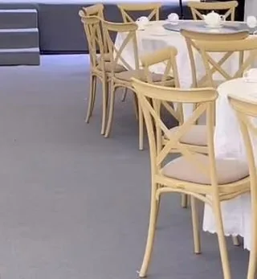

الحفل يخلص، والضيوف يطلعون، والعروسين يمشون، وتبقى القاعة: طاولات عليها بقايا أكل، وكاسات قهوة وشاي، وشموع ذايبة، وورد ذبلان، وبقع على السجاد، وريحة بخور وعطور وأكل معلقة في الهوا. وفي الرياض، كثير من القاعات عليها حجز عصر اليوم الثاني أو حتى صباحه. ولهذا أهم شغل القاعة يصير في الساعات اللي بعد الحفل، وتنظيف قاعات الأفراح بالرياض في هالوقت يحتاج ترتيب واضح يعرف فيه الفريق وش يسوي أول.
محتويات المقال 40 قسم
- تنظيف قاعات الأفراح بالرياض: ليش الساعات اللي بعد الحفل أهم ساعات
- موقف يتكرر في قاعات الرياض
- وش يتنظف أول؟ الترتيب العملي
- قبل الحفل: تجهيزات تسهل الشغل بعده
- ليش هذا الترتيب بالذات
- إزالة البقع الشائعة في القاعات
- تنظيف أقسام القاعة
- مفارش الطاولات وأغطية الكراسي
- الثريات والإضاءة
- التنسيق مع متعهد الضيافة ومنسق الحفل
- السلامة أثناء التنظيف الليلي
- فرز النفايات الكبيرة والكراتين
- الأغراض المنسية
- المصلى وأماكن الوضوء
- ركن الأطفال وغرف الانتظار
- المجالس الجانبية والكنب المنجد
- القاعات النسائية والرجالية
- تنظيف بعد الحفلات بالرياض: جدول زمني مقترح من ليلة الحفل للصباح
- تنظيف قاعات المناسبات بالرياض: التنظيف الدوري بين المناسبات
- الاستراحات ومجمعات المناسبات
- الحفلات في الخيام والقاعات الخارجية
- بعد حفلات الأطفال والتخرج والعشاوات
- الحشرات بعد بقايا الطعام
- أنواع الأرضيات في القاعات
- الأثاث الفاخر والأسطح المذهبة
- التكييف بعد الحفل
- غرفة الفريق والمخازن
- المدخل الخارجي واللوحة
- أخطاء شائعة
- توزيع الفريق على مناطق
- الحفلات في الشتاء والصيف
- تقرير المشرف بعد كل حفل
- جاهزية القاعة للحفل الجاي: قائمة فحص سريعة
- تجهيز عربة الفريق ليلة الحفل
- حفلين في نفس اليوم
- تسليم القاعة لصاحب الحجز الجاي
- ريحة البخور على المدى الطويل
- متى تحتاج الاستعانة بشركة متخصصة؟ وبماذا تسأل
- أسئلة شائعة عن تنظيف القاعات بعد الحفلات
- الخاتمة
هالدليل موجه لمالكي ومديري قاعات الأفراح وقاعات المناسبات والاستراحات ومجمعات المناسبات. يجاوب على سؤال العنوان بترتيب عملي، ويشرح ليش هالترتيب، وكيف تتعامل مع البقع الشائعة، وكيف تنظف كل قسم، مع جدول زمني تقريبي وقائمة فحص للجاهزية.
💡 هالمقال إرشادي عن التنظيف فقط. اشتراطات البلدية والدفاع المدني وتراخيص القاعات تراجعها من الجهات المختصة مباشرة. والمدد اللي في المقال تقريبية، وتختلف حسب حجم القاعة وعدد الحضور ونوع الحفل.
تنظيف قاعات الأفراح بالرياض: ليش الساعات اللي بعد الحفل أهم ساعات
القاعة تبيع تجربة ليلة وحدة، وصاحب الحجز الجاي يدخل يشوفها قبل حفله بساعات. ولو لقى ريحة أكل من أمس، أو بقعة على السجاد، أو شمع على الطاولات، بيتوتر، وأول اتصال بيكون للإدارة. وغير كذا، الوسخ اللي يتأخر يصعب: بقايا الأكل تطلع ريحة، والقهوة تنشف في السجاد، والشمع يتصلب، والكريمة تلزق.
والمشكلة إن الوقت ضيق والفريق تعبان من الليلة، فالشغل لازم يمشي بترتيب ما يحتاج تفكير. وفي تنظيف قاعات الأفراح بالرياض، الترتيب الواضح يخلي الفريق يخلص في وقت معقول بدون ما يعيد نفس الشغل مرتين.
موقف يتكرر في قاعات الرياض
تخيّل مديرة قاعة أفراح نسائية في الرياض، خلص عندها حفل زواج قرابة الفجر، وعندها حجز ثاني عصر نفس اليوم. دخلت القاعة بعد ما طلعت آخر الضيفات، ولقت السجاد قدام الكوشة عليه بقع قهوة وحناء، والكراسي المغطاة بالقماش عليها بقع عطر وشوكولاتة، وريحة البخور والأكل مالية المكان. والعاملات تعبانات بعد ليلة طويلة، والوقت قدامهن ساعات قليلة قبل ما توصل منسقة الحفل الجاي تجهز الكوشة.
العاملات بدأن يكنسن الأرضية والطاولات لسه عليها الصحون والورد، فطاح فتات الأكل والورق على المكان اللي انكنس. وبعدين رشن معطر كثير عشان الريحة، فاختلط مع ريحة البخور وصار أثقل. وقرب الظهر، اكتشفت إن بقع القهوة نشفت في السجاد، وإن أغطية الكراسي تحتاج تتبدل. فرتبت للحفل الجاي قائمة بالترتيب: النفايات أول، بعدين الطاولات والكراسي، بعدين المطبخ والحمامات، والسجاد بعدها، والتهوية في الأخير.
وش يتنظف أول؟ الترتيب العملي
قبل أي مسح أو كنس، هذا الترتيب اللي يوفر عليك الوقت والجهد في تنظيف بعد الحفلات بالرياض:
١) إخراج النفايات وبقايا الطعام والزينة التالفة
ابدأ بجمع كل اللي بيطلع: الصحون والكاسات المستعملة، وبقايا الأكل، والمناديل، والورد الذبلان، والزينة اللي ما تنحفظ، والكراتين. بقايا الأكل بالذات تطلع أول شي لأنها أسرع شي تطلع منه ريحة. واستخدم أكياس قوية، ولا تخلي الأكياس المليانة في القاعة أو المطبخ، تطلع مباشرة للحاويات برا. والزينة اللي بتنحفظ للحفلات الجاية تنفصل من البداية، عشان ما تنرمى بالغلط.
٢) تفكيك وترتيب الطاولات والكراسي ومنصة العرض
بعد ما تفضى الطاولات، ترتفع المفارش وأغطية الكراسي وتنحط في أكياس للغسيل، وتتفصل اللي فيها بقع عشان تتعالج قبل الغسيل. والطاولات تنمسح، والكراسي تتجمع في مكان واحد أو ترجع لمكان تخزينها. ومنصة العرض والكوشة يتفكك منها اللي يتفكك حسب اتفاقك مع منسق الحفل. والهدف إن الأرضية تفضى قبل ما تبدأ تنظيفها.
٣) المطبخ ومنطقة التقديم والبوفيه
المطبخ ومنطقة البوفيه فيها دهون وصلصات وبقايا أكل وأواني. والصواني والسخانات وطاولات التقديم تنظف وتنشف، والأرضية تنغسل لأنها غالبًا عليها دهون تخليها زلقة. والثلاجات تتفحص، وأي أكل باقي يتعامل معه حسب سياسة القاعة واتفاقها مع المتعهد. ولو المطبخ تابع لمتعهد الضيافة، فحدد من البداية مين ينظف وش.
٤) دورات المياه
دورات المياه في ليلة الحفل تستخدم بكثرة، وغالبًا تكون فيها مناديل على الأرض، وسلال مليانة، ومغاسل عليها مكياج وعطر وماء. تنظف كاملة: السلال، والمراحيض، والمغاسل، والمرايا، والأرضيات، وتتعبى المستلزمات من جديد. وتتهوى، لأن ريحتها تأثر على القاعة كلها.
٥) السجاد والأرضيات
الحين الأرضية فاضية، والمطبخ والحمامات خلصت، فتقدر تبدأ فيها. السجاد ينشفط بالكامل، والبقع تتعالج كل وحدة حسب نوعها، والأرضيات الصلبة تنكنس وتنمسح أو تنغسل بالمكاين حسب نوعها. والمداخل والممرات من ضمنها. وفي تنظيف قاعات الأفراح بالرياض، السجاد هو أكثر جزء ياخذ وقت، فخليه يبدأ أول ما تفضى الأرضية.
٦) الزجاج والمرايا والإضاءة
الأبواب الزجاجية، والمرايا في الممرات وغرف التجهيز، والطاولات الزجاجية لو فيه، تنمسح من البصمات والعطر. والإضاءة والثريات تتفحص، وأي لمبة محروقة تتبلغ للصيانة، والثريات تنظف بشكل دوري بمعدات آمنة. ولو كان فيه رش مواد زينة أو قصاصات لامعة، تتفحص الحواف والزوايا لأنها تتعلق فيها.
٧) التهوية والروائح
البخور والعطور وريحة الأكل تقعد في السجاد والستائر والأقمشة. فبعد ما يخلص التنظيف، افتح الأبواب والمنافذ لو الجو يسمح، وشغل التهوية والشفط، وخل وقت كافي للهوا يتجدد قبل ما تحتاج تستخدم أي معطر. واستخدم المعطر بعد ما تروح الريحة. وفي تنظيف بعد الحفلات بالرياض، التهوية هي آخر خطوة، لكن تبدأ من أول ما تطلع النفايات.
محتاج تنظيف احترافي؟
انتهى الحفل وعندك حجز بكرة؟ فريقنا يدخل القاعة بعد خروج الحضور مباشرة، ويمشي بنفس الترتيب من النفايات للأرضيات والروايح، عشان تكون جاهزة لحجزك الجاي
قبل الحفل: تجهيزات تسهل الشغل بعده
جزء كبير من سرعة التنظيف بعد الحفل يتقرر قبل ما يبدأ الحفل. وهذي تجهيزات بسيطة تفرق:
- فرش حماية تحت طاولات البوفيه والضيافة، لأنها أكثر مكان تطيح فيه القهوة والأكل
- سلال كافية موزعة في القاعة وقرب الضيافة ودورات المياه
- أكياس احتياطية وعربة جاهزة قريبة من القاعة
- صواني تحت الشموع والمباخر عشان الشمع والرماد ما يطيح على المفارش والسجاد
- تحديد مكان مؤقت لأغراض المنسق والمتعهد
- عاملة أو عامل في الحفل نفسه يتابع الانسكابات أول بأول
البقعة اللي تنشال وقت الحفل بدقيقة توفر نص ساعة بعده.
ليش هذا الترتيب بالذات
الترتيب يمشي على ثلاث قواعد بسيطة. الأولى: من الوسخ الكبير للوسخ الدقيق، فما تمسح طاولة عليها صحون، ولا تشفط سجادة عليها كراسي. والثانية: من فوق لتحت، لأن أي شي ينظف فوق ينزل منه على اللي تحت، فالطاولات والمنصة قبل الأرضية. والثالثة: الأرضيات بعد ما يرتفع كل شي فوقها، لأن الأرضية اللي تنظف وعليها أغراض بتتوسخ مرة ثانية لما ترتفع.
وفيه سبب ثاني للترتيب: بعض الوسخ يزيد صعوبته مع الوقت. بقايا الأكل تطلع ريحة، والقهوة تنشف، فهذي تنعالج بدري. أما الزجاج والإضاءة فما يتغيرون لو تأخروا ساعتين. وفي تنظيف قاعات المناسبات بالرياض، الترتيب هذا يخلي كل عامل يعرف وش بعد مهمته، بدون ما ينتظر تعليمات.
إزالة البقع الشائعة في القاعات
كل بقعة لها طريقة، والقاعدة العامة: تعامل معها بأسرع وقت، وجرب أي منظف في مكان ما يبان أول، واتبع تعليمات الشركة المصنعة للمنظف ولنوع القماش أو السجاد، ولا تفرك بقوة لأن الفرك ينشر البقعة ويخرب الألياف.
القهوة والشاي
القهوة العربية والشاي من أكثر البقع في قاعات الرياض. انشف السائل بفوطة نظيفة بالضغط بدون فرك، وبعدها استخدم منظف مناسب للسجاد أو القماش حسب تعليماته، واشطف بماء قليل، وانشف مرة ثانية. والبقعة اللي نشفت تحتاج وقت أطول، وأحيانًا جهة متخصصة.
الدهون والصلصات
الأرز والمرق والصلصات تترك بقع دهنية على المفارش والسجاد والكراسي. شيل الزايد بملعقة أو كاشط بلاستيك، وبعدها استخدم منظف مخصص للدهون مناسب للقماش. ولا تستخدم ماء حار على كل الأقمشة، لأن بعضها يثبت البقعة فيه، فارجع لملصق القماش.
الشمع
الشمع الذايب على الطاولات والسجاد والمفارش يحتاج صبر. خله يتصلب، وبعدها شيل الطبقة الكبيرة بكاشط بلاستيك بلطف. واللي يبقى على القماش له طرق حسب نوع القماش، ولو الشمع ملون ممكن يترك لون، فتعامل معه بحذر أو خله لجهة متخصصة.
الشوكولاتة والكريمة
الكيك والحلويات والشوكولاتة تترك بقع فيها دهون وسكر مع بعض. شيل الزايد أول، وبعدها استخدم منظف مناسب، واشطف بماء بارد أو فاتر حسب القماش. والسكر لو بقى في السجاد يجذب الغبار ويلزق، فلازم يطلع كامل.
البقع على الأقمشة والكراسي
أغطية الكراسي والكنب في الكوشة وغرف العروس والمفارش كلها أقمشة، وكل قماش له تعليمات. الأغطية اللي تنشال تنغسل حسب ملصقها بعد معالجة البقع، والكراسي المنجدة الثابتة تتنظف بالمكان بمنظف مناسب لنوع قماشها، والكنب الفاخر أو المخمل الأفضل تتعامل معه جهة متخصصة.
الحناء
في حفلات الحناء والزواجات، الحناء ممكن تطيح على السجاد أو الأقمشة أو الأرضيات الفاتحة، وتترك لون قوي. شيلها وهي رطبة قدر الإمكان، بدون فرك، وتعامل مع اللون الباقي حسب نوع السطح. والبقعة اللي نشفت على سجاد فاتح غالبًا تحتاج تنظيف متخصص.
العطور وأثر البخور
العطر على الأرضيات الرخامية أو الطاولات اللامعة ممكن يترك أثر، وعلى الأقمشة ممكن يترك بقعة دهنية. والبخور يترك رماد ودخان يقعد على الأسقف والستائر مع الوقت. فالأسطح تنمسح بمنظف مناسب، والمباخر تنظف بعد كل حفل، والستائر تنظف بشكل دوري.

تنظيف أقسام القاعة
القاعة الرئيسية
أكبر مساحة وأكثر وسخ. الطاولات والكراسي والسجاد أو الأرضيات، والجدران المنخفضة اللي تتلمس، والأبواب. والشغل فيها يمشي على الترتيب اللي فوق، ويتقسم على مناطق لو القاعة كبيرة، كل عامل أو مجموعة لهم جزء.
منطقة الضيافة
طاولات القهوة والشاي والتمر والحلويات، والدلال والفناجين، والسخانات. البقع هنا كثيرة، والأرضية حول طاولات الضيافة غالبًا عليها قهوة وسكر. والدلال والفناجين تنغسل وتنشف وتنحفظ، والطاولات تنمسح، والأرضية تتعالج بقعها.
الكوشة والمنصة
الكوشة فيها ورد وأقمشة وإضاءة وكنب، ومحور الصور في الحفل. الورد الطبيعي يتشال أو يتحفظ حسب الاتفاق، والأقمشة والكنب تتفحص من البقع، والمنصة تنظف من فوق ومن الدرج. والممر اللي يمشي عليه العروسين غالبًا سجاد أو أرضية فاتحة، ويحتاج عناية.
غرف العروس والتجهيز
غرفة العروس فيها مرايا وكاونترات وكنب، وبقايا مكياج وعطور ودبابيس شعر ومناديل. المرايا والكاونترات تنمسح، والكنب يتفحص، والأرضية تنكنس من الدبابيس والقطع الصغيرة، والحمام الخاص فيها ينظف كامل. وأي أغراض منسية تنحفظ.
المداخل
المدخل أول شي يشوفه ضيوف الحفل الجاي. الأرضية تنمسح أو تنغسل، والأبواب الزجاجية تنمسح من الداخل والخارج، وطاولة الاستقبال تنمسح، وأي زينة على المدخل تنشال أو تترتب. وبقايا البخور على المدخل تنظف.
المواقف
المواقف بعد الحفل فيها أكياس وعلب ماء وأوراق، وأحيانًا بقايا ألعاب نارية أو ورق ملون. تنكنس وتنجمع منها النفايات، ومداخل القاعة من جهة المواقف تنظف. والمواقف النظيفة أول انطباع لضيوف الحفل الجاي من سياراتهم.
مفارش الطاولات وأغطية الكراسي
المفارش وأغطية الكراسي والأشرطة والربطات هي أكثر أقمشة تتوسخ في ليلة الحفل. فبعد ما ترتفع، تتفرز: اللي فيه بقع يتعالج أول، واللي نظيف نسبيًا يروح للغسيل العادي، والقماش الحساس مثل الساتان والتل يتغسل حسب ملصقه. وسواء الغسيل داخلي أو مع مغسلة خارجية، خلي عندك طقم احتياطي يكفي حفل كامل، عشان الحفل الجاي ما ينتظر الغسيل. وفي تنظيف قاعات الأفراح بالرياض، المفرش اللي فيه بقعة صغيرة يبان في صور الحفل الجاي. وفي تنظيف قاعات المناسبات بالرياض، المفارش النظيفة تنحفظ مطوية في مكان ناشف ومغطى، بعيد عن ريحة المطبخ.
الثريات والإضاءة
الثريات الكريستال والإضاءة المعلقة جزء من شكل القاعة، وتبان في كل صورة. ومع البخور والدخان والغبار، الكريستال يفقد لمعته. ما تحتاج تنظيف بعد كل حفل، لكن تحتاج فحص سريع، وتنظيف دوري بمعدات رفع آمنة وعمالة مدربة، والكهرباء مفصولة. وفي تنظيف قاعات الأفراح بالرياض، الثريا النظيفة تفرق في صور العروس والكوشة. وفي تنظيف قاعات المناسبات بالرياض، اللمبات المحروقة تتبلغ للصيانة في نفس الليلة، عشان تتصلح قبل الحفل الجاي.
التنسيق مع متعهد الضيافة ومنسق الحفل
ليلة الحفل فيها أكثر من فريق: متعهد الضيافة، ومنسق الكوشة والزينة، وفريق الإضاءة والصوت، وفريق القاعة. ولو ما تحدد مين يشيل وش، الكل يحسب الشغل على غيره. فاتفق من البداية: مين ينظف المطبخ وأواني الضيافة، ومين يفك الكوشة ومتى، ومين يشيل الزينة، ومتى يدخل فريق التنظيف. وفي تنظيف بعد الحفلات بالرياض، الفريق اللي يدخل والكوشة لسه ما تفككت يضيع وقته. وفي تنظيف بعد الحفلات بالرياض كمان، اتفق مع المنسق على مكان مؤقت لأغراضه لين يجي ياخذها. وفي تنظيف قاعات الأفراح بالرياض، هالاتفاق يكون مكتوب في شروط الحجز. وفي تنظيف قاعات المناسبات بالرياض، نفس الشي ينطبق على المؤتمرات والعشاوات والحفلات اللي فيها أكثر من مورد.
السلامة أثناء التنظيف الليلي
الشغل بعد منتصف الليل والفريق تعبان يزيد احتمال الحوادث. الأرضيات المبللة بالدهون في المطبخ، والكراسي المتكدسة، والسلالم للثريات، والأكياس الثقيلة. فخل الإضاءة كاملة وقت التنظيف، ولوحات تحذير على الأرضيات المبللة، والكراسي تتكدس بارتفاع آمن، والأكياس الثقيلة تتشال باثنين أو بعربة. والمواد في عرباتها، وما تنخلط مع بعض. وفي تنظيف بعد الحفلات بالرياض، فترة راحة قصيرة للفريق في نص الليل تخلي الشغل أدق. وفي تنظيف قاعات الأفراح بالرياض، المشرف يتأكد إن المكاين مفصولة والمواد مقفلة قبل ما يطلع الفريق.
فرز النفايات الكبيرة والكراتين
الحفل الكبير ينتج نفايات كثيرة: بقايا أكل، وعلب ماء، وكراتين الضيافة والزينة، وورد، وأقمشة زينة تالفة، وأحيانًا بلاستيك تغليف الهدايا. والأفضل تتفرز من البداية: بقايا الأكل في أكياس محكمة تطلع أول، والكراتين تتطبق وتنجمع، والورد يتجمع، والزجاج المكسور في كيس أو صندوق منفصل عشان ما يجرح أحد. وفي تنظيف بعد الحفلات بالرياض، نسق مع جهة نقل النفايات على وقت الاستلام بعد الحفلات. وفي تنظيف قاعات المناسبات بالرياض، الحاويات تكون كافية لحجم الحفل، عشان ما تتكدس الأكياس جنب الباب.
الأغراض المنسية
بعد كل حفل يبقى شي: شنطة يد، أو جوال، أو عباية، أو نظارة، أو هدية، أو لعبة طفل. والفريق اللي ينظف يلقاها تحت الطاولات أو في غرف التجهيز أو الحمامات. فخل طريقة واضحة: الغرض يتسلم للمشرف، ويتسجل بالوقت والمكان، وينحفظ في مكان آمن حسب سياسة القاعة لين يجي صاحبه. وفي تنظيف قاعات الأفراح بالرياض، الضيفة اللي ترجع لغرضها تلقاه محفوظ ومسجل. وفي تنظيف قاعات المناسبات بالرياض، الأغراض الثمينة تتسلم للإدارة مباشرة.
المصلى وأماكن الوضوء
أغلب القاعات فيها مصلى أو غرفة صلاة، وأماكن وضوء. وفي ليلة الحفل تستخدم أكثر من العادي، والأرضية حول أماكن الوضوء تتبلل، والسجاد في المصلى يتوسخ من الأقدام المبللة. فأماكن الوضوء تنظف وتنشف مع دورات المياه، وسجاد المصلى ينشفط ويتفحص من الرطوبة، والمصاحف والكتب تترتب في رفوفها. وخل المصلى من أول الأماكن اللي تتهوى.
ركن الأطفال وغرف الانتظار
بعض القاعات تخصص ركن أو غرفة للأطفال وقت الحفل، أو غرفة انتظار للسائقين والمرافقين. ركن الأطفال فيه غالبًا حلويات وعصيرات وألعاب، وبقع على الأرض والجدران المنخفضة، فيحتاج تنظيف دقيق للأرضية والزوايا والألعاب. وغرف الانتظار فيها كراسي وطاولات قهوة وسلال، وتنظف زي منطقة الضيافة.
المجالس الجانبية والكنب المنجد
كثير من القاعات فيها مجالس جانبية لكبار السن، فيها كنب منجد ومساند وطاولات صغيرة. والقهوة والتمر والعطور تطيح عليها كثير. فالكنب يتنفض ويتشفط بعد كل حفل، والبقع تتعالج على طول بمنظف مناسب لنوع القماش بعد تجربته في مكان ما يبان، والمساند تتعدل. والتنظيف العميق للكنب يكون دوري، وغالبًا بمعدات متخصصة.
القاعات النسائية والرجالية
كثير من قاعات الرياض فيها قسم نسائي وقسم رجالي، أو قاعة نسائية بالكامل. وهذا يأثر على توقيت دخول فريق التنظيف. فالقسم النسائي ما يدخله فريق رجالي إلا بعد ما تطلع آخر ضيفة وتتأكد الإدارة إن القسم فاضي، أو يدخله فريق نسائي. ونسق مع إدارة القاعة على وقت الدخول، ومين يتأكد إن القسم فاضي، ومين يستلم الأغراض المنسية. وفي تنظيف قاعات المناسبات بالرياض، احترام خصوصية القاعة جزء أساسي من طريقة الشغل.
تنظيف بعد الحفلات بالرياض: جدول زمني مقترح من ليلة الحفل للصباح
هذا جدول تقريبي لقاعة متوسطة الحجم، والمدد تختلف حسب حجم القاعة وعدد الحضور وعدد الفريق ونوع الحفل:
| المرحلة | المهام | المدة التقريبية |
|---|---|---|
| بعد خروج الحضور مباشرة | التأكد إن القاعة فاضية، وإخراج النفايات وبقايا الأكل والزينة التالفة | أول ساعة تقريبًا |
| المرحلة الثانية | رفع المفارش والأغطية، وترتيب الطاولات والكراسي، وتفكيك ما يتفكك من المنصة | ساعة إلى ساعتين حسب الحجم |
| المرحلة الثالثة | المطبخ ومنطقة البوفيه والضيافة، ودورات المياه | بالتوازي مع المرحلة الثانية إذا الفريق يسمح |
| المرحلة الرابعة | شفط السجاد ومعالجة البقع، وتنظيف الأرضيات الصلبة والمداخل | عدة ساعات حسب المساحة والبقع |
| المرحلة الخامسة | الزجاج والمرايا والإضاءة وغرف التجهيز | ساعة تقريبًا |
| الصباح | التهوية الطويلة، والمواقف، وفحص الجاهزية، وتعبئة المستلزمات | حسب موعد الحجز الجاي |
وفي تنظيف بعد الحفلات بالرياض، المراحل الثانية والثالثة ممكن تمشي مع بعض لو الفريق مقسم. والسجاد اللي يحتاج غسيل كامل ياخذ وقت ينشف، فخطط له حسب موعد الحجز الجاي.
تنظيف قاعات المناسبات بالرياض: التنظيف الدوري بين المناسبات
التنظيف بعد كل حفل يرجع القاعة جاهزة، لكن فيه شغل ما يلحق في ليلة وحدة، ويتراكم لو انتسى. وفي تنظيف قاعات المناسبات بالرياض، هذا الشغل يتوزع على الأيام الهادية:
- غسيل السجاد كامل بشكل دوري حسب كثرة الحفلات
- تنظيف الثريات والإضاءة العالية بمعدات آمنة
- تنظيف الستائر والأقمشة الثابتة اللي تمسك ريحة البخور
- تنظيف الكنب والكراسي المنجدة في الكوشة وغرف العروس
- فتحات التكييف وفلاتره بالتنسيق مع الصيانة
- المطبخ بعمق، بما فيه الشفاطات وخلف الأجهزة
- المخازن ومكان تخزين الزينة والكراسي
المواسم المزدحمة
في إجازات نهاية الأسبوع، والإجازات الطويلة، وبعد الأعياد، الحفلات تتلاحق، وأحيانًا حفلين في يوم واحد. وفي هالأوقات، التنظيف العميق يكون قبل الموسم، والفريق يزيد، والمفارش والأغطية الاحتياطية تكون جاهزة عشان ما ينتظر الغسيل. وفي تنظيف قاعات الأفراح بالرياض، الموسم يكشف هل الترتيب يمشي تحت الضغط.
الاستراحات ومجمعات المناسبات
الاستراحة تختلف عن القاعة: فيها غالبًا جلسات خارجية، ومسبح أحيانًا، وملحق، ومطبخ صغير، ومساحات عشب أو بلاط مكشوفة. والحفل في الاستراحة يترك بقايا على الجلسات الخارجية والعشب والمشبات والمسبح. وفي تنظيف قاعات المناسبات بالرياض للاستراحات، الجلسات الخارجية تتنفض، والمشبات تتنظف من الرماد بعد ما تبرد تمامًا، والعشب يتنظف من البقايا الصغيرة. وفي تنظيف قاعات المناسبات بالرياض لمجمعات المناسبات اللي فيها أكثر من قاعة، كل قاعة تمشي على نفس الترتيب، والفريق يتوزع حسب مواعيد انتهاء الحفلات. وفي تنظيف بعد الحفلات بالرياض للاستراحات، المسبح لو انستخدم له تنظيف وصيانة خاصة تتبع الشركة المسؤولة عنه.
الحفلات في الخيام والقاعات الخارجية
بعض الحفلات تكون في خيام كبيرة أو مساحات خارجية مزينة بالأقمشة المعلقة والإضاءة. وهنا الغبار يدخل أكثر، والأرضية غالبًا سجاد صناعي أو أرضيات مؤقتة. والأقمشة المعلقة في السقف تمسك الغبار وريحة البخور، وتنظيفها يتنسق مع الجهة المسؤولة عن الخيمة. وفي تنظيف قاعات المناسبات بالرياض للحفلات الخارجية، بقايا الأكل تنشال بسرعة أكبر لأن الحرارة والحشرات أسرع. وفي تنظيف بعد الحفلات بالرياض للخيام، الأرضيات المؤقتة تنشفط وتنظف قبل ما تتفكك. وفي تنظيف قاعات الأفراح بالرياض، الحفلات الخارجية تحتاج تنظيف المواقف والمحيط الخارجي أكثر.
بعد حفلات الأطفال والتخرج والعشاوات
القاعة تستقبل غير الزواجات حفلات تخرج وأعياد ميلاد وعشاوات وحفلات شركات وحفلات أطفال، وكل وحدة لها نوع وسخ. حفلات الأطفال فيها حلويات وألوان وبالونات وقصاصات ملونة كثيرة، تنتشر في الزوايا وتحت الكنب. والعشاوات فيها أكل أكثر ودهون. وحفلات الشركات فيها منصات وشاشات وأسلاك. وفي تنظيف بعد الحفلات بالرياض، الترتيب نفسه يمشي، بس التركيز يتغير حسب نوع الحفل. وفي تنظيف قاعات الأفراح بالرياض، اسأل صاحب الحجز عن نوع الحفل وعدد الحضور قبله، عشان تجهز الفريق. وفي تنظيف قاعات المناسبات بالرياض، القصاصات الملونة واللامعة تحتاج شفط دقيق للزوايا والسجاد.
الحشرات بعد بقايا الطعام
بقايا الأكل اللي تبقى في الزوايا أو تحت الكراسي أو في حاويات المطبخ تجذب الحشرات، خصوصًا في الصيف. وأفضل وقاية هي إخراج بقايا الأكل بدري، وتنظيف تحت الطاولات والكراسي والزوايا، وإغلاق الحاويات. ولو احتجت مكافحة، فهذي شغل جهة مرخصة ومتخصصة، في وقت ما فيه حفلات، مع تهوية وتنظيف قبل الحجز الجاي. وفي تنظيف بعد الحفلات بالرياض، تنظيف تحت الأثاث جزء من الترتيب. وفي تنظيف قاعات الأفراح بالرياض، المطبخ هو أول مكان تتفحصه.
أنواع الأرضيات في القاعات
القاعة الوحدة ممكن يكون فيها أكثر من نوع أرضية، وكل نوع يحتاج طريقة:
- الرخام والجرانيت: منظف متعادل بدون أحماض، ومسح بممسحة نظيفة، والتلميع الدوري حسب حالته
- البورسلان والسيراميك: مسح وغسيل بمكاين مناسبة، مع تنظيف الفواصل بشكل دوري
- الباركيه والخشب: ممسحة شبه ناشفة ومنظف مناسب للخشب، بدون ماء كثير
- السجاد والموكيت: شفط بعد كل حفل، ومعالجة البقع، وغسيل كامل دوري
- الأرضيات المؤقتة في الخيام: شفط أو كنس، ومسح حسب مادتها
والسجاد الفاتح قدام الكوشة وفي ممر العروسين يحتاج انتباه أكثر من غيره، لأنه يبان في الصور.
الأثاث الفاخر والأسطح المذهبة
الكراسي المذهبة، والطاولات بأطراف معدنية، والإطارات المزخرفة، والمرايا الكبيرة بإطارات منحوتة. هذي الأسطح تنخدش أو يروح لونها لو انمسحت بمادة قاسية أو فوطة خشنة. فتنمسح بفوطة ناعمة شبه ناشفة، ومنظف خفيف مناسب حسب تعليمات الشركة المصنعة، والزخارف تتنظف بفرشاة ناعمة. والكراسي المذهبة تنكدس بحماية بينها، أو ما تنكدس أبدًا.
التكييف بعد الحفل
التكييف في ليلة الحفل يشتغل بأقصى طاقة، ويسحب معه ريحة البخور والأكل والغبار. وبعد الحفل، خل التكييف يشتغل مع التهوية لفترة، عشان يتجدد الهوا. وفلاتر التكييف تمسك الريحة مع الوقت، فتنظيفها أو تغييرها بشكل دوري بالتنسيق مع الصيانة يقلل الريحة اللي ترجع مع كل تشغيل. وفتحات التكييف الظاهرة تنمسح لأنها تمسك الغبار وتبان.
غرفة الفريق والمخازن
مخزن الكراسي والطاولات والزينة والمفارش، وغرفة فريق التنظيف. هذي الأماكن تتنسى وسط ضغط الحفلات، لكن لو تكدست فيها الأشياء بدون ترتيب، يصير التجهيز للحفل الجاي أبطأ. فالكراسي ترجع لمكانها مرتبة، والزينة تنحفظ في صناديق بأسماء محتواها، والمفارش النظيفة منفصلة عن اللي تنتظر الغسيل، والمخزن نفسه ينظف بشكل دوري.
المدخل الخارجي واللوحة
الواجهة واللوحة والإضاءة الخارجية أول شي يشوفه الضيف وهو جاي بسيارته. وبعد الحفل، تكون عليها أوراق وأكياس وأحيانًا بقايا ألعاب نارية أو ورد. فالمدخل الخارجي ينكنس، والأبواب تنمسح من برا، واللوحة والإضاءة تتفحص، وأي لمبة محروقة تتبلغ للصيانة قبل الحفل الجاي.
أخطاء شائعة
- تنظيف الأرضيات قبل رفع الأغراض والطاولات: الأرضية تتوسخ مرة ثانية
- ترك بقايا الطعام ساعات في القاعة أو المطبخ: الريحة تقعد في الأقمشة
- إهمال السجاد وبقعه للصباح: القهوة والحناء تنشف وتصعب
- الاكتفاء بالمعطرات بدل التهوية: الريحة تختلط وتصير أثقل
- فرك البقع بقوة: تنتشر وتخرب ألياف السجاد
- استخدام منظف واحد لكل الأقمشة بدون تجربة
- رمي الزينة اللي كانت بتنحفظ بالغلط
- عدم فحص غرف التجهيز والحمامات الخاصة
وفي تنظيف قاعات الأفراح بالرياض، أغلب هالأخطاء سببها الاستعجال في ليلة متأخرة، والحل قائمة مكتوبة يمشي عليها الفريق.
توزيع الفريق على مناطق
الفريق اللي يشتغل كله في نفس المكان يتزاحم ويتأخر. والأفضل تقسيمه من البداية: مجموعة للنفايات والطاولات والكراسي، ومجموعة للمطبخ والضيافة، ومجموعة لدورات المياه وغرف التجهيز، وبعد ما تفضى القاعة يتجمع الكل على السجاد والأرضيات. والمشرف يمر على المجموعات ويحرك العمالة للمكان اللي يتأخر. وفي القاعات اللي فيها قسمين، كل قسم له فريقه.
الحفلات في الشتاء والصيف
في الشتاء، بعض القاعات والاستراحات تستخدم دفايات أو مشبات أو جلسات نار، وهذي تترك رماد وريحة دخان، والمشبات تتنظف بعد ما تبرد تمامًا. وفي الصيف، الحرارة تخلي بقايا الأكل تطلع ريحة أسرع، والحشرات أكثر، فالنفايات تطلع بدري أكثر، والمطبخ يتنظف في أول الليل.
تقرير المشرف بعد كل حفل
تقرير قصير من المشرف بعد كل حفل يفيد الإدارة كثير: وقت بداية التنظيف ونهايته، والبقع اللي ما طلعت، والأعطال اللي تبلغت، والأغراض المنسية، وأي ملاحظة على المفارش أو الأثاث. ومع الوقت، هالتقارير توريك كم ياخذ كل نوع حفل في قاعتك، وتساعدك تقدر الوقت والفريق للحفلات الجاية بشكل أدق.
جاهزية القاعة للحفل الجاي: قائمة فحص سريعة
قبل ما تسلم القاعة لصاحب الحجز الجاي، امش على هالقائمة:
| البند | تم | ملاحظات |
|---|---|---|
| القاعة خالية من النفايات وبقايا الأكل والزينة التالفة | ||
| الطاولات والكراسي نظيفة ومرتبة أو في مكان تخزينها | ||
| السجاد مشفوط والبقع متعالجة وناشف | ||
| الأرضيات الصلبة والمداخل نظيفة | ||
| المطبخ والبوفيه ومنطقة الضيافة نظيفة | ||
| دورات المياه نظيفة والمستلزمات معبأة | ||
| غرف العروس والتجهيز نظيفة والمرايا ممسوحة | ||
| الزجاج والإضاءة سليمة وممسوحة | ||
| الريحة مقبولة بعد التهوية | ||
| المواقف نظيفة | ||
| الأغراض المنسية محفوظة ومسجلة |
تجهيز عربة الفريق ليلة الحفل
الفريق اللي يدور على الأدوات الساعة ثلاث الفجر يضيع وقت. فجهز العربات والمعدات قبل ما يخلص الحفل، في مكان قريب من القاعة: أكياس نفايات قوية بأحجام مختلفة، وكواشط بلاستيك للشمع، وفوط مايكروفايبر بألوان لكل منطقة، ومنظفات مناسبة لكل نوع بقعة وسطح، ومكنسة شفط للسجاد، ومكينة للأرضيات الصلبة، وقفازات، ولوحات تحذير، وأكياس للمفارش. وفي تنظيف بعد الحفلات بالرياض، العربة المجهزة تخلي الفريق يبدأ أول ما يطلع الحضور. وفي تنظيف قاعات الأفراح بالرياض، قائمة العربة تتعلق في غرفة الفريق. وفي تنظيف قاعات المناسبات بالرياض، المعدات الثقيلة مثل مكاين السجاد تكون مشحونة أو جاهزة قبل الحفل.
حفلين في نفس اليوم
في المواسم، بعض القاعات تستقبل حفل ظهر وحفل ليل، أو حفلين ورا بعض بفاصل ساعات قليلة. وهنا ما فيه وقت لتنظيف كامل بينهم. فالأولوية تكون للأشياء اللي يشوفها الضيف ويحس فيها: النفايات وبقايا الأكل، والطاولات والمفارش، والحمامات، والبقع الظاهرة في السجاد، والريحة. والشغل الأعمق، مثل غسيل السجاد والثريات، يتأجل لأقرب يوم فاضي. وفي تنظيف بعد الحفلات بالرياض، الفريق في هالحالة يكون أكبر من العادي. وفي تنظيف قاعات الأفراح بالرياض، المفارش والأغطية الاحتياطية لازم تكون جاهزة قبل. وفي تنظيف قاعات المناسبات بالرياض، اتفق مع صاحب الحجز الثاني على وقت دخول منسقه بعد ما يخلص الفريق الأساسي.
تسليم القاعة لصاحب الحجز الجاي
قبل ما يدخل منسق الحفل الجاي، المشرف يمشي على قائمة الجاهزية ويتأكد من كل بند. ولو فيه شي ما انحل، مثل بقعة قديمة في السجاد أو لمبة تحتاج تبديل، يتبلغ فيه صاحب الحجز بوضوح قبل ما يدخل. وفي تنظيف قاعات الأفراح بالرياض، التسليم الواضح يقلل الخلافات. وفي تنظيف قاعات الأفراح بالرياض أيضًا، صور القاعة بعد التنظيف تفيدك ترجع لها لو صار نقاش. وفي تنظيف بعد الحفلات بالرياض، خل وقت بين نهاية التنظيف ودخول المنسق، لأن السجاد يحتاج ينشف. ونفس التسليم يصير لقاعات المؤتمرات والمعارض المؤقتة.
ريحة البخور على المدى الطويل
البخور جزء من كل حفل تقريبًا في الرياض. ومع الوقت، الدخان يقعد على الأسقف والجدران العالية والستائر والثريات، ويغير لونها شوي شوي، والريحة تبقى في الأقمشة. فالمباخر تتنظف بعد كل حفل، والرماد يتشال، والستائر تتنظف بشكل دوري، والجدران العالية والأسقف تتنظف في الصيانة الدورية. وفي تنظيف قاعات الأفراح بالرياض، التهوية بعد كل حفل تقلل تراكم الريحة في القاعة.
متى تحتاج الاستعانة بشركة متخصصة؟ وبماذا تسأل
فريق القاعة يقدر يغطي التنظيف بعد الحفلات الصغيرة والمتوسطة غالبًا. لكن فيه حالات يكون فيها التعامل مع جهة متخصصة أنسب: الحفلات الكبيرة اللي يتبعها حجز قريب، أو المواسم اللي تتلاحق فيها الحفلات، أو غسيل السجاد والكنب والستائر بمعدات ما عندك، أو تنظيف الثريات العالية.
وقبل ما تختار أي شركة تنظيف بالرياض أو جهة تنظيف للقاعة، اسأل:
- تقدرون تشتغلون في الليل وبعد منتصف الليل مباشرة بعد الحفل؟
- كم تحتاجون وقت تقريبي لقاعة بحجم قاعتنا؟ وكيف توزعون الفريق؟
- عندكم فريق جاهز للمناسبات الكبيرة والمواسم؟
- عندكم عاملات للقاعات النسائية؟
- وش المعدات اللي بتجيبونها للسجاد والأرضيات؟
- كيف تتعاملون مع بقع القهوة والحناء والشمع؟
- كيف تتعاملون مع الأغراض المنسية؟
وفي مؤسسة نقاء للتنظيف، نبدأ مع إدارة القاعة بمعاينة نشوف فيها المساحة والأقسام وأنواع السجاد والأرضيات، ونتفق على وقت الدخول بعد الحفل والترتيب. وفي تنظيف قاعات الأفراح بالرياض، نتفق من البداية على حدود الشغل مع متعهد الضيافة ومنسق الحفل.
أسئلة شائعة عن تنظيف القاعات بعد الحفلات
الخاتمة
القاعة في الرياض تتجهز لحفلها الجاي في الساعات اللي بعد الحفل اللي قبله. والجواب على سؤال وش يتنظف أول بسيط: النفايات وبقايا الأكل، ثم الطاولات والكراسي، ثم المطبخ والحمامات، ثم السجاد والأرضيات، ثم الزجاج والإضاءة، والتهوية في الأخير. والبقع تتعالج بدري، والقائمة المكتوبة تخلي الفريق يمشي بدون تردد.
ولو تبي فريق يدخل قاعتك بعد الحفل ويجهزها لحجزك الجاي، مؤسسة نقاء تخدم قاعات الأفراح والمناسبات في الرياض، وترتب معك موعد ونطاق يناسبك.
قاعتك جاهزة للحجز الجاي
نسق معنا معاينة لقاعتك، ونرتب دخول الفريق بعد خروج الحضور وتجهيز القاعة لحجزك الجاي
محتاج تنظيف احترافي؟
تواصل معنا لتنسيق خدمة التنظيف بعد المناسبات في قاعتك، ونرتب معك وقت الدخول والنطاق
- تنظيف القاعة بعد الحفل مباشرة
- معالجة بقع القهوة والشمع والحناء
- تجهيز القاعة للحجز الجاي
- خدمة في كل أحياء الرياض